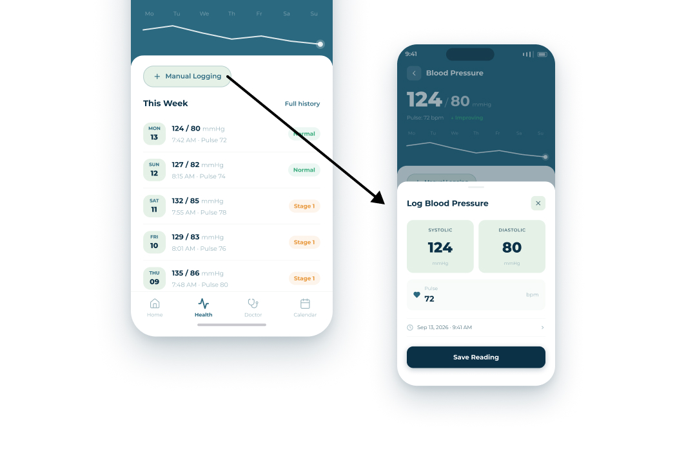
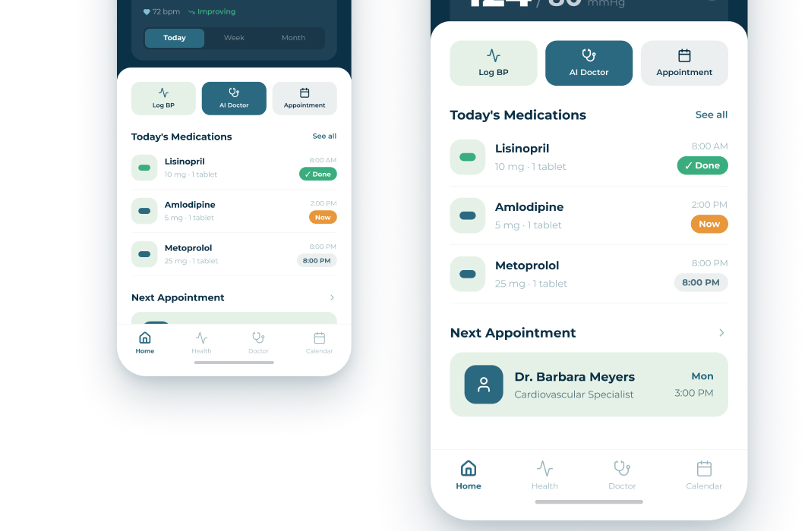
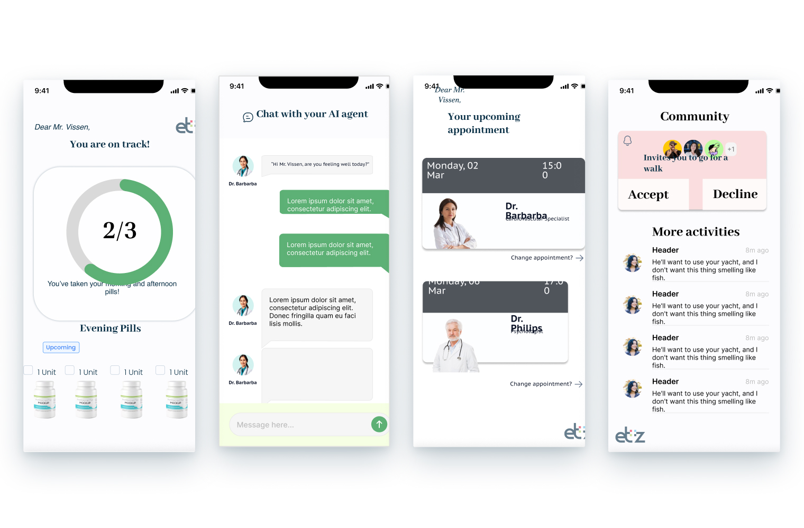
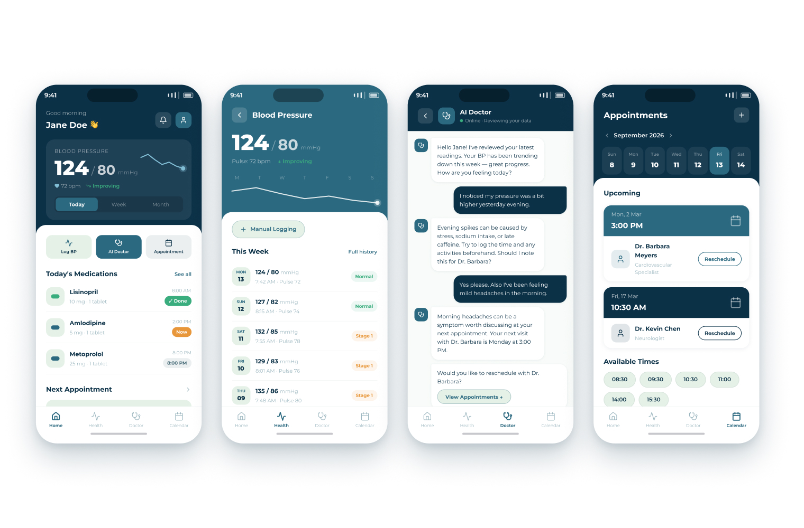

UX Design · Course Project
My HyprT: a medical app for hypertension self-management
A CeHRes Roadmap-driven redesign for cardiovascular patients — from stakeholder interviews through to a usability-tested prototype.
Project description
Course project · Role: UX researcher & Designer · Approach: CeHRes Roadmap
This project aimed to improve the self-management of patients with cardiovascular disease through a medical app prototype. We adopted the CeHRes Roadmap, from researching the values of stakeholders to the evaluation plan — a strategic, holistic approach that let us design the prototype around research evidence and user feedback.
The CeHRes Roadmap offers a holistic, iterative framework that integrates stakeholder involvement, behavior change theories, and technology development from the start.
-
01
Contextual inquiry Who the users and stakeholders are, and what the problem looks like in their own setting.
-
02
Value specification Turning what stakeholders value into requirements the thing has to meet.
-
03
Design Prototyping against those requirements, then testing the prototype with real users.
-
04
Operationalisation Introducing it into actual practice — adoption, not just a working build.
-
05
Summative evaluation Measuring uptake and effect, which is where the loop starts again.
User research
Contextual Inquiry & Value Specification. At this stage we conducted desk research and stakeholder interviews to better identify the problem, context, and the values emphasised by stakeholders.
Why can't CVD patients improve their health outcomes?
Low adherence and engagement in hypertension self-management among older adults.
- Expert interview Cardiovascular surgeon, ETZ hospital
- Literature review Behaviour change & adherence research
- Competitor analysis Hello Heart, MyHeartPal
- Stakeholder analysis Patients, providers, developers, hospitals
- Patients need simplicity, guidance, and social encouragement.
- Providers need efficient, data-driven tools for remote monitoring.
- Barriers are psychological, social, and physical — not a lack of information.
Taking medication is essentially the same as not smoking, eating healthy, and exercising more. It's a form of behavior. — CVD Specialist
Translate research evidence into design
At this stage we compared interview and desk research results, and combined them with behavioural change theory to prioritise the values and translate them into feasible design suggestions.
Key design features
- Medication checklist & reminder system
- Personalized dashboard
- Automatic doctor appointment booking
- Clean, bright design style


Challenge & solution
Challenge: got carried away by fancy design features. Solution: usability testing and design consultations, then iteration.
Our target audience is 60+ cardiovascular disease patients. While designing, I struggled with putting personal aesthetic before user preference — sometimes I got carried away with fancy choices. I overcame this by consulting fellow designers and running usability testing. Iteration was the key to a more user-centered experience.

BeforeA busier interface, saturated colors, and competing visual elements that slowed older users down.

AfterSimplified color palette, clearer hierarchy, larger touch targets — easier to navigate at a glance.
Usability testing feedback
Participants: older adults, a medical expert, and UX peers. Method: task-based testing using a scenario (Mr. Vissen, age 72).
Key findings
- Easy navigation overall
- Improvements needed in visual clarity, blood pressure input, and AI trust
- Outcome: UI refinements and feature suggestions (e.g. audio guidance)
Although the app is in English, it's fairly clear. Navigation could be improved by showing navigation buttons on every page. — Respondent 6
Very user-friendly due to the minimalist design. — Respondent 4
The app is easy to use once you get the hang of it, and this happens quickly. — Respondent 5
Next in the journal —